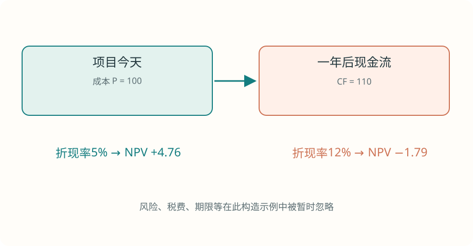
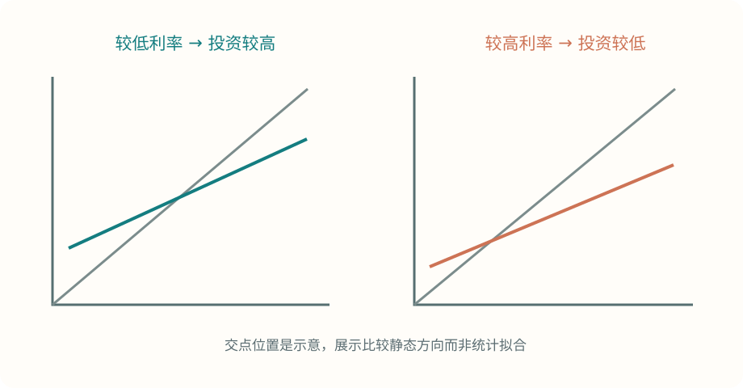
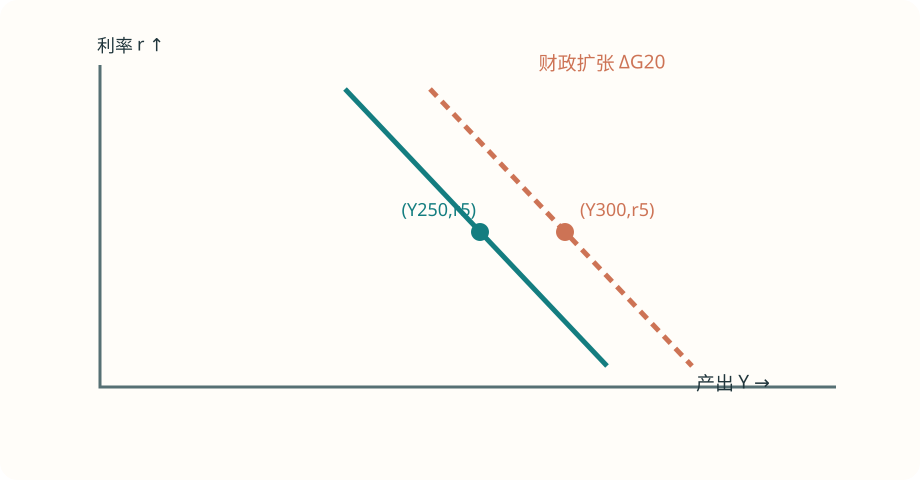
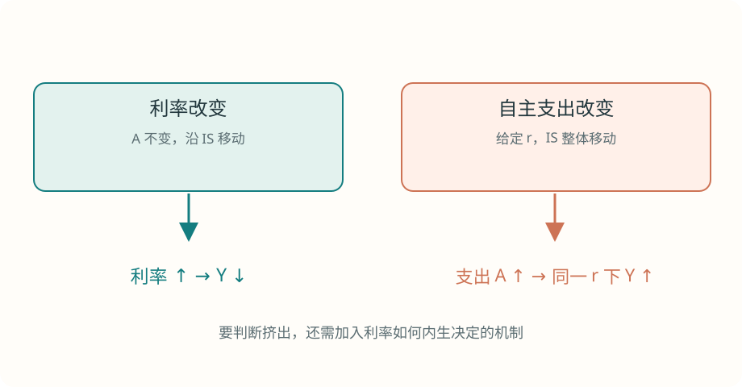

产品市场与 IS 曲线
当借贷利率上升，哪些投资项目不再划算？从投资的净现值到不同利率对应的产品市场均衡，推导 IS 曲线。
利率为什么会改变今天的实际投资
假设企业要花 100 元购置设备，预计一年后得到 110 元且没有剩余价值。若折现率为 5%，一年后现金流的现值约为 104.76 元，净现值为正；若折现率升至 12%，现值约 98.21 元，净现值为负。这里的现金流是理想化的无风险数值，实际投资还应考虑风险、税收、资本成本、维护费用与政策变化。

把利率带进凯恩斯交叉
在短期价格固定、既定税收 T、没有净出口或净出口为常数的简化模型中，家庭消费为 C=C₀+c(Y−T)，企业计划投资为 I=I₀−br，其中 b>0 表示投资对利率的敏感程度。总需求 AE=C+I+G；将所有不随收入和利率变化的部分合为 A=C₀−cT+I₀+G，可以写成 AE=A+cY−br。

移项得 (1−c)Y=A−br，因 c<1，因此每一个给定的利率 r 都对应一个产品市场均衡产出 Y。把所有这样的均衡点连起来，就是 IS 曲线。
用同一组参数把 IS 曲线算出来
设置自主支出 A=120、边际消费倾向 c=0.6、投资利率敏感度 b=4；利率 r=5（单位为百分比的数值，不是 0.05）时，投资利率项 br=20，均衡 Y=(120−20)/0.4=250。若利率升为 10，同样条件下 Y=(120−40)/0.4=200。这个下降是沿着原有 IS 曲线移动，不是 IS 曲线整体左移。

同一条 IS 上移动，还是让 IS 右移？
保持 A=120、c=0.6、b=4：先调整利率，再增加自主政府购买。模型展示基准产出与财政冲击后的产出。
为什么「移动」与「沿曲线运动」不能混淆
| 变化 | 其他条件 | IS 图上的表现 |
|---|---|---|
| 利率 r 从 5 升到 10 | A、c、b 固定 | 原有 IS 上向左上方移动，Y 从250到200 |
| 政府购买 G 增加20 | 利率暂时固定 | A 增加20，IS 整体右移；同一 r 下 Y 增加50 |
| 居民提高自主消费 | 利率、其他参数固定 | 自主支出增加，IS 右移 |
| 投资对利率变得更敏感 | b 改变 | IS 的斜率发生变化，不能视作平移 |
在上述简单模型中财政支出多 20，对任何固定 r 的产品市场均衡收入增加 20/(1−0.6)=50；若再把货币市场的利率内生反应考虑进来，利率可能同时变化，实际均衡增幅就不一定等于 50。

IS 的字母为何源自储蓄与投资
在无政府、无国际贸易的两部门模型中，实际产出 Y=C+I，居民把收入用于 C+S，因此计划储蓄 S 等于计划投资 I 是产品市场均衡的一种表述。但存在政府时，应把公共储蓄考虑进去：在简化税收口径下，私人储蓄与政府储蓄之和等于投资；开放经济还会引入经常账户与资本收支。不能把 S=I 当作所有经济体、所有账户安排下原封不动的结论。
来源与证据
资料用于核对概念和制度口径；所有图示数值为构造案例，不能作为实际经济数据使用。
- OpenStax：消费、投资与支出均衡 · aggregate expenditures
- 美联储历史教学资料：IS–LM及利率与商品市场 · goods-market equilibrium & IS-LM
- 英格兰银行：利率影响金融条件与消费投资 · monetary policy transmission